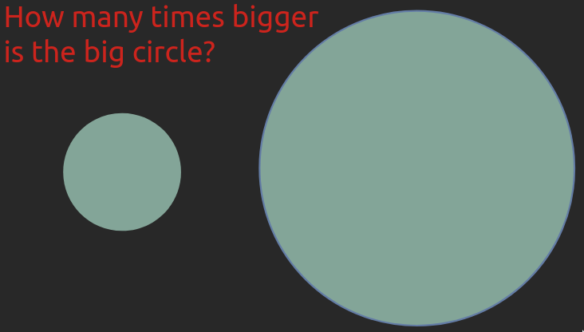
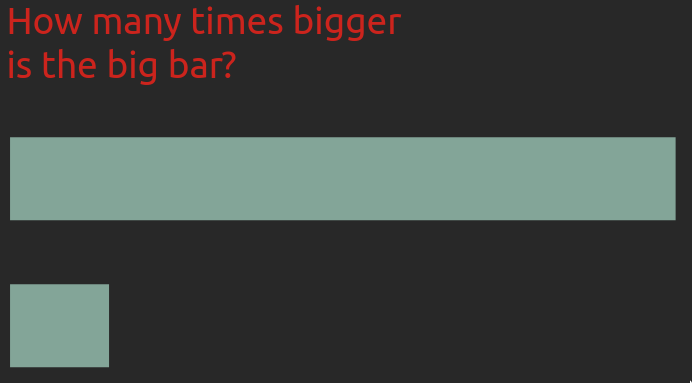
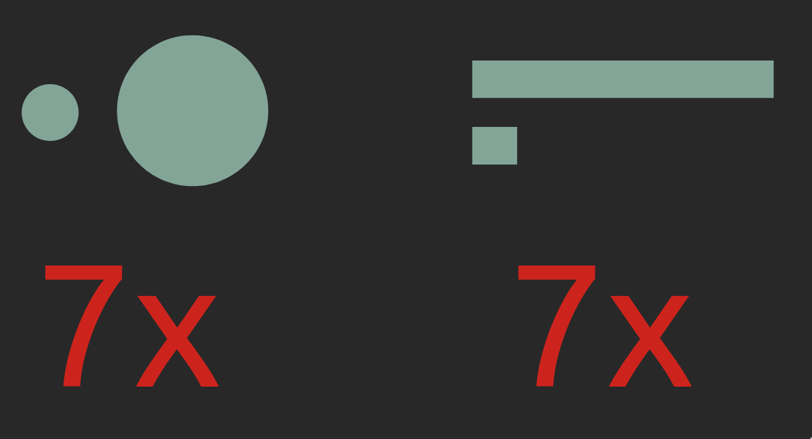
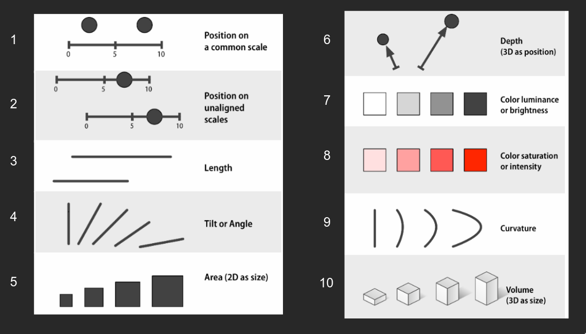
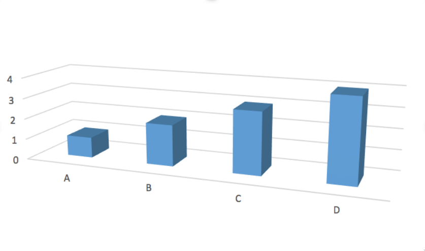
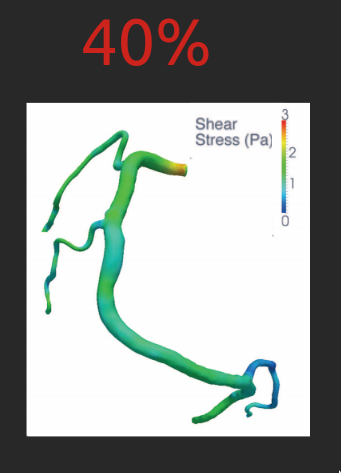
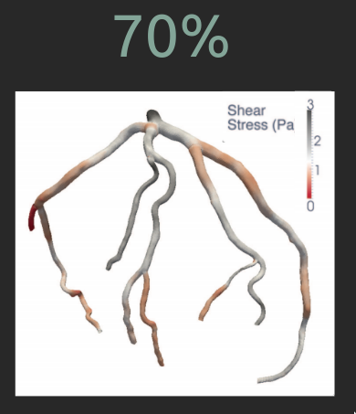
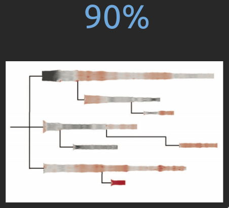

Effective Use of Visual Channels
Comparing sizes is easier for some geometrical objects than for others

Comparing sizes is easier for some geometrical objects than for others

Both the circles and rectangles differ by 7x

Summary of visual channel efficiency

Don’t use 3D without a good reason
Unnecessary 3D makes plot interpretation harder

Meaningful 3D can facilitate plot interpretation
Properly designed visualizations help saving lives

Changing the colour scale almost doubled the accuracy

Changing from 3D to 2D improved the further accuracy

Let’s apply what we learned!